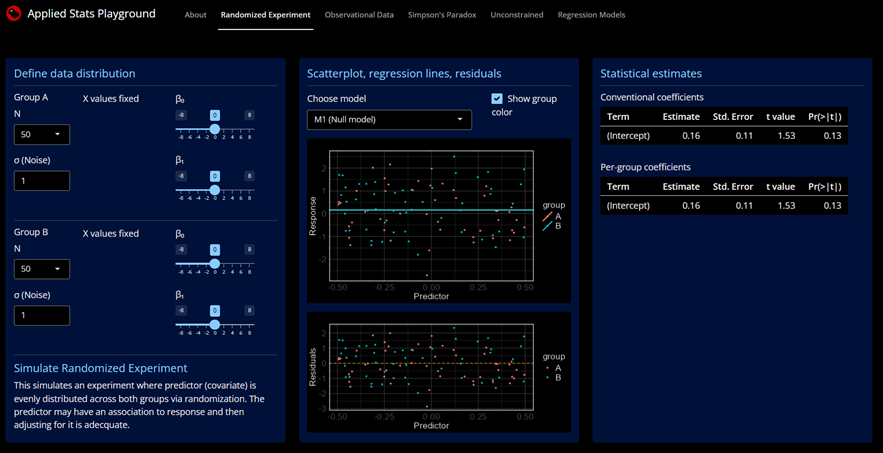
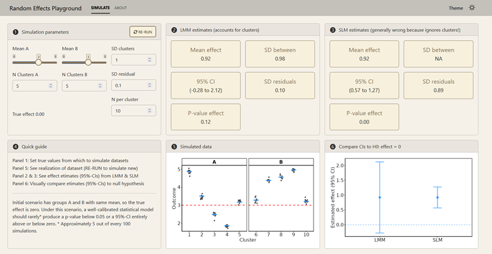
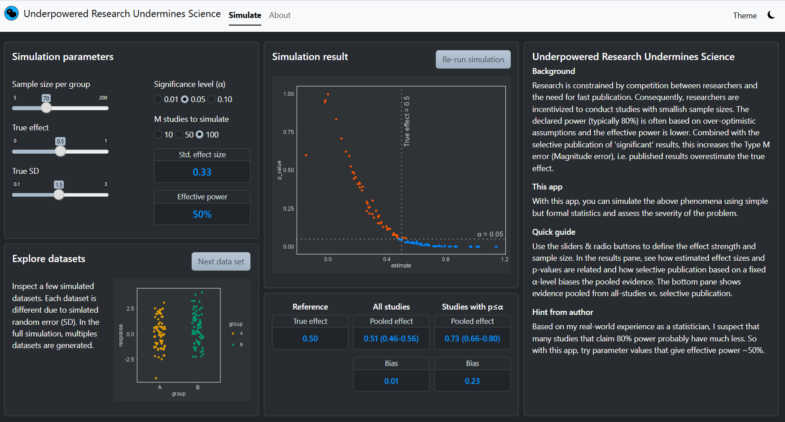
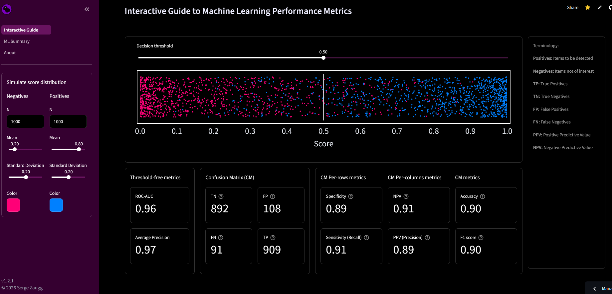
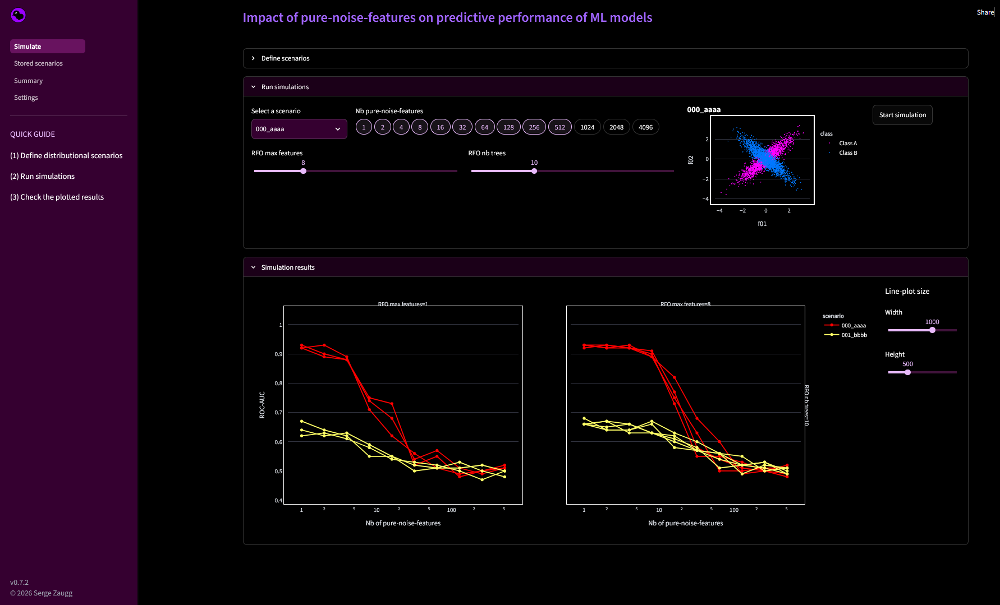

Interactive Statistics & ML Playgrounds
Explore statistics with interactive apps designed to make complex concepts intuitive, accessible, and engaging. From understanding the fundamentals of linear regression to exploring mixed-effects models and the consequences of underpowered research, each app combines hands-on experimentation, data visualisation, and statistical simulations. These playgrounds offer an engaging way to understand statistical concepts and their real-world implications.




